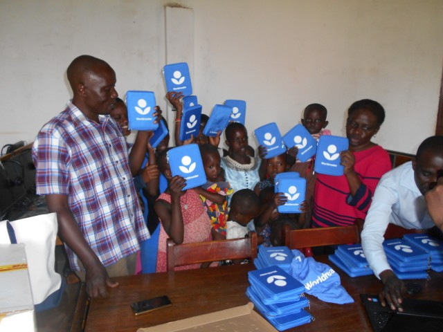
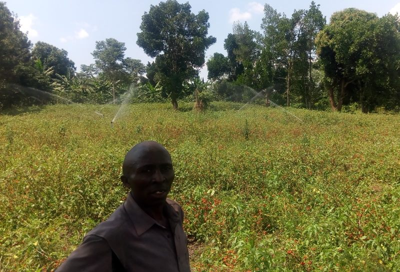

top stories
National Library of Uganda gives e-Readers
The World Reader Organisation through National Library of Uganda (NLU) AfLIA, Uganda National Curriculum Development Center (NCDC) and Local Publishers organized a One week Hands on Training to 20 Librarians selected from both Public and Community Libraries from two regions that's Central and Western Region at Grand Global Hotel in Kampala-Makerere to promote the LOCAL Digital Literacy Project using the local languages Luganda, Rutooro and Runyoro. read more
Mr. Balaba Peter the Manager of Nakaseke Communtiy Telecentre and Mr. Mukasa Richard the Town Clerk of Nakaseke Town Council were receiving 50 e-readers after the training on 11-September-2018 from Mrs. Janepher the Librarian of the National Library of Uganda with the presence of Readers (Kids) at Nakaseke Community Telecentre.
This was the second time of receiving e-Readers fro World Reader and the first time was in 2016 were 20 e-Readers were donated also, meanwhile Nakaseke Community Library has 70 e-Readers in total.
The purpose of e-Readers is improve the children's reading skills hence they can read whenever they want due to the characteristics of the gadget.
E-Readers has helped the users and also inspired the rest of the people in the community to read hence discovering and acquiring new skills, it has a long life battery span that it can save power for two weeks and above, consisting of various different books in all subjects like Maths, English, Stories and many more...
Also there books which are in local language (Luganda) and this also has led users who to learn writing and reading this language (learn), the device can also connected to the INTERNET since it has WI-FI to download and install new books. read less
Vegetables Growers
Nakaseke Radio to visited a group of farmers in Kalagala-Kyamutakasa Parish Nakaseke Sub-county to get their story on how they grow Vegetable especially Nakati ( Solanum Aethiopcum). read more
Mr. Peter Balaba who was on the team in the field said that "I was so inspired by the irrigation technology adapted to over come the challenging Climate Changes".
Mr. Kalule Patrick a group leader told us that they received support from NARO and CABI to boost their Vegetable production. The group has decided to specialize in Seed production because it pays off. He further said that in one Acre of land they can harvest between 500-600 kilograms and each is sold at 35000 Uganda shillings and this is achieved in just 5 Months.
read lessWomen Entrepreneurs

Nakaseke Community radio hosted two women entrepreneurs to share their success stories. Among them is Nalubwama Dorcas on the left and this is how she said about her journey to success hence becoming one of the most prominent entrepreneurs in Nakaseke District.
Mrs. Dorcas said that she is married and now has 3 children, a designer and decorator, has a Saloon in Nakaseke Town and is a good Hair styler, also owns a garden somewhere in Nakaseke Town Council Romans Garden which have the following services; read more
- Guest House
- Bar and Restaurant
- Conference Hall
- Space for Ceremonies
Just like how Rome was not built in one day, also this took time for Nalubwama to make it and she passed through various different and difficult ways to reach her goals.
She started as a charcoal burner in her home village ‘Kigegge’ struggling to get funds for tuition to learn how to style hair (Hair Dressing and Styling) hair for one year at a certain Big Saloon in Wobulenzi Town approximately 20 kilometers from Nakaseke District.
Dorcas says that was a first learner that she would learn a new hairstyles in just two days and this led her boss to give her a job even before she had not finished the course yet for 6 months.
From there, Nalubwama was doing some saving and she came up with the amount of shs.70,000/= from which she bought a calf. She looked after it and when it grew to into a Big Bull, she sold it at shs.320,000/= and used the money to set up her own saloon at Nakaseke SSaza in Nakaseke District.
Dorcas said that again from these savings she used it to opened up her second business of a boutique,a gardens, the bar & restaurant and many more... in Nakaseke District.
Dorcas encounters challenges such as seasonable customers in the boutique and saloon, but this shortage is solved by the incomes generated from the other businesses.
Nalubwama says that she can now able to provide her children’s needs, buy herself all what she wants and needs and also do train other people in the community who need to learn Hair Dressing and Styling. read less